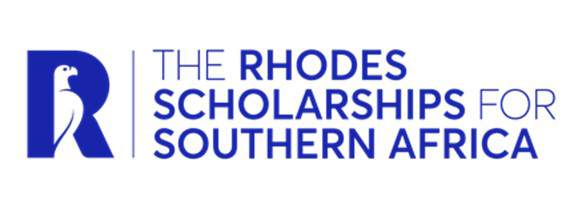

IkamvaYouth to Oxford
You could be a Rhodes Scholar.
Fully-funded postgraduate study at the University of Oxford. Let's check if you can apply. It takes about 2 minutes.
★ Free to apply. No application feeWhy IkamvaYouth students?
The four South African “School” scholarships have been expanded. They now reach whole education districts and partner universities, several overlapping IkamvaYouth's communities. If you've shown academic excellence and a commitment to others, this could be for you.
Eligibility check
About the Rhodes Scholarship
The Rhodes Scholarship (established 1902) is one of the world's oldest and most prestigious international scholarships. It funds postgraduate study at the University of Oxford for at least two years.
What it covers
What selectors look for
The four criteria, drawn from the founder's Will, have barely changed in 100 years:
There is no single “type” of Rhodes Scholar
For over 120 years, personal statements have been diverse and ever-changing. Selectors look for an original portrait of you: your voice, your story, your authentic self. IkamvaYouth's culture of leadership and service is exactly what they value.
Questions and answers
Is it really free?
Yes. There is no application fee for the Rhodes Scholarship, and this tool is free too.
What is a “School” scholarship and why does it matter to me?
Four scholarships were historically tied to specific schools. They have been opened up to whole education districts and partner universities. For example: any high school in the Makhanda (Makhana) area now qualifies for the St Andrew's pool, the Cape Town Metro South district (which includes Nyanga and Masiphumelele) qualifies for Bishops, and UCT graduates qualify for SACS. The checker works out which apply to you.
Can I apply to more than one?
Yes, up to two pools: usually one School pool plus your regional pool. You cannot apply to two School pools. BLMNS (Botswana, Lesotho, Malawi, Namibia, eSwatini) applicants apply to the BLMNS pool only.
I'm not sure which education district my school is in.
No problem. The checker will still show your regional pool (your safe baseline), and flag that a coordinator can help you confirm whether a School pool also applies.
What does “interim scholarship” mean?
What if I'm not eligible yet?
Look at the Mandela Rhodes Foundation. It funds Honours/Master's study and is a great stepping stone. You can apply for the Rhodes later.
Any tips for applying?
Start early and save your work often (load-shedding!). Line up your four referees (three academic plus one character) as soon as you can, and prepare your documents before the portal gets busy.